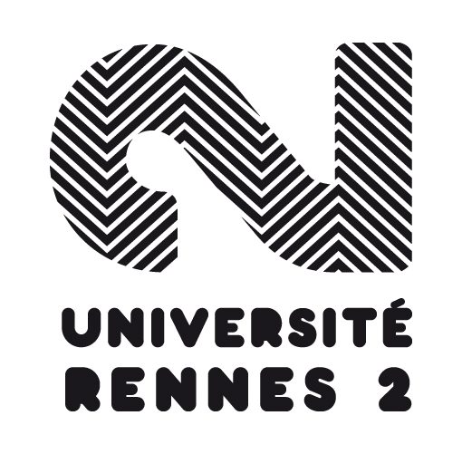

Edouard Hyvernat
De formation initiale Géomaticien et Cartographe, j'ai évolué durant mes premières années de vie professionnelle au contact des responsables d'opérations foncières en concevant des outils basés sur les Systèmes d'Information Géographique. Mes missions pouvaient se résumer dans la chaîne de traitement suivante : Collecte, Traitement, Géoréférencement, Analyse et Diffusion de données dans des outils et applications SIG ou métiers.
Puis ma prise de poste chez ICADE Promotion m'a permise de faire évoluer mon métier vers la prospection foncière, l'analyse des règles d'urbanisme et la modélisation des droits à construire, la réalisation d'études capacitaires et de faisabilités au profit de l'ensemble des agences et directions régionales au sein d'une équipe restreinte.
Mes domaines de prédilections et mon expertise portent ainsi sur l'urbanisme et ses thématiques liées : foncières, cadastrales, droits des sols ainsi que sur la typologie et l'analyse statistique et spatiale des marchés fonciers et immobiliers, .
Par choix et conforté par la réussite de mes premiers projets professionnels, je sais mettre à profit les outils Open-Source de cartographie, data-viz et d'analyse statistiques pour présenter et rendre compte de mon travail de manière synthétique et optimale via des visuels et illustrations graphiques de qualité. Je sais enfin me maintenir à niveau sur les aspects techniques et réglementaires liés à l'aménagement du territoire et sais anticiper les évolutions majeures dans cet écosystème.
Je suis aujourd'hui intéressé par une nouvelle opportunité professionnelle dans le développement foncier.
Experience
Responsable du Développement Foncier
125 millions de lignes de stockage et plusieurs milliers de lignes d'écriture par semaines ; jusqu'à 50 utilisateurs simultanés avec des accès depuis des sites distants.
3 instances de PostgreSQL sur 3 serveurs différents (Windows Server 2008, 2012 R2, Debian 8).
Sources des données : IGN, BRGM, DGFiP, INSEE, OSM, Région IDF, IAU, APUR, CEREMA ...
Intégration, géoréférencement et diffusion de vues dédiées de la base de donnée fiscale DVF (Demande de Valeurs Foncières) et de ses dérivés.
Mais aussi utilisateur et intégrateur des bases BIEN, Sit@del, CAPEM, Fichiers Fonciers (CEREMA).
Illustrator
Typologie des marchés fonciers et immobiliers
Analyse et répartition géographique des Grands Propriétaires en Ile-de-France
Mais le poste recouvrait aussi :
-
- Les formations et le support pour les outils internes (portail SIG, outil métier de suivi des acquisitions foncières, MS Excel, assistance informatique, etc.).
- L'écriture de script FME pour les géo-traitements.
- La mise en place de modèle d'export et de mise en page cartographique sous Illustrator
Administrateur SIG Confirmé
125 millions de lignes de stockage et plusieurs milliers de lignes d'écriture par semaines ; jusqu'à 50 utilisateurs simultanés avec des accès depuis des sites distants.
3 instances de PostgreSQL sur 3 serveurs différents (Windows Server 2008, 2012 R2, Debian 8).
Sources des données : IGN, BRGM, DGFiP, INSEE, OSM, Région IDF, IAU, APUR, CEREMA ...
Intégration, géoréférencement et diffusion de vues dédiées de la base de donnée fiscale DVF (Demande de Valeurs Foncières) et de ses dérivés.
Mais aussi utilisateur et intégrateur des bases BIEN, Sit@del, CAPEM, Fichiers Fonciers (CEREMA).
Illustrator
Typologie des marchés fonciers et immobiliers
Analyse et répartition géographique des Grands Propriétaires en Ile-de-France
Mais le poste recouvrait aussi :
-
- Les formations et le support pour les outils internes (portail SIG, outil métier de suivi des acquisitions foncières, MS Excel, assistance informatique, etc.).
- L'écriture de script FME pour les géo-traitements.
- La mise en place de modèle d'export et de mise en page cartographique sous Illustrator
Responsable SIG
En charge du développement du SIG pour une trentaine d'opérationnels, le poste de Responsable du SIG recouvrait :
-
- La migration et la gestion des Systèmes de Gestion de Base de Données : Oracle --> PostgreSQL
- La migration et la gestion du client lourd SIG : Geoconcept --> QGIS
- La charte graphique et les modèles de mise en page cartographique : InDesign & Illustrator
- Le suivi et le lancement de marchés publics pour le développement de l'outil métier de gestion foncière.
- La formation des 20 opérationnels sur les outils de cartographie.
Mais le poste recouvrait aussi :
-
- L'encadrement de 2 stagiaires.
- La participation à divers groupes de travail inter-professionnels
- La gestion du SI durant les congés d'été du Responsable des Systèmes d'Informations
Géomaticien
Développement de l’application web de gestion foncière et du déploiement de QGIS en interne
Stagiaire SIG
Réalisation d'une étude foncière et d'un atlas cartographique pour le futur projet de port fluvial à la confluence Seine et Oise. Travail en partenariat avec Haropa Port de Paris et le Conseil Départemental des Yvelines
Formation
Université Rennes II
Université Paris IV
Académie de Versailles
Compétences Techniques
Les environnements techniques (Systèmes d'exploitation, bases de données, logiciels et applications, sécurité et sauvegarde) ont toujours été multiple dans mon travail et se différencient selon les projets et les infrastructures qui sont déjà en place.
Je dois souvent faire preuve d'une grande adaptabilité, comme tout géomaticien, et je m'efforce de toujours me tenir au courant des usages et des nouveautés dans l'univers des SIG. En ce sens l'auto-formation et les rencontres inter-professionnelles (tels que les journées ESRI ou le FOSS4G France) sont des éléments importants dans mon emploi du temps.
Cependant quelques constantes se retrouvent et je me sens à l'aise dans les organisations qui reprennent les éléments suivants :


Il m'est aussi arrivé de travailler avec les outils suivants :
-
- VBA Access
- Langage Python
- Talend
et je suis très à l'aise pour travailler et me documenter dans un environnement anglophone (forums spécialisés, Stack Overflow, etc.).
Cartographie
En cours de réalisation...
Formations Professionnelles
- ArcGIS Niveau III - version 10.5 ESRI France
- Fichiers Fonciers / MAJIC et FME Bacigeo Conseil et Formation
- Python V2.5 et ArcGIS 10.2 Ecole Nationale des Sciences Géographiques
- PostgreSQL / PostGIS Ecole Nationale des Sciences Géographiques
- Stratégie Foncière Publique EPFY
Centres d’intérêts
Mis à part mes activités de cartographe que je développe aussi à la maison, je passe beaucoup de temps en famille et avec les amis. Je profite de la douceur de vivre en province pour sortir au marché, chiner dans les brocantes aux beaux-jours, me promener, bricoler (beaucoup) à la maison, passer du temps avec ma fille.
Actuellement je refais avec ma femme toute une partie de notre maison et je passe beaucoup de temps à chercher du matériel, à imaginer les futurs travaux et à mettre en pratique moi-même ce que j'apprends sans trop d'hésitation.
Mais je sais aussi prendre du temps pour conseiller et aider mes amis et ma famille sur des sujets technos (site web, carto, mise en page de documents, etc.).
Si le sport occupe une place importante dans ma vie mais il m'est difficile actuellement d'être régulier dans ma pratique, notament le badminton et la voile car le rythme familiale le permet moins en ce moment. Mais j'ai toujours de beaux projets de navigation en tête !
En attendant je randonne toujours régulièrement et je n'hésite pas à être bénévole pour les compétitions de canne de combat, sport que pratiquait ma femme à haut niveau et grâce auquel nous avons plusieurs amis étranger qui nous donnent des occasions de voyage.
Enfin j'ai toujours la volonté d'améliorer mon anglais pour profiter davantage de ces personnes que nous voyons régulièrement et me donner plus d'assurance de manière générale.